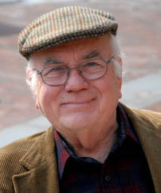

John Lee Lowrance 1932 –2011

One of our friends and a member of our wine group died Thursday, Oct. 6, 2011, after a brief illness with
pancreatic cancer.
John´s involvement with the group goes beyond the first tasting report recorded on this site on March 9th, 1998.
John´s tastings were always thoughtfully assembled and reflected his intellectual curiosity in his choice of
wines whether they were from ancient Bordeaux, young Argentinian malbec or Japanese Saki. He rarely missed a
tasting and was always one of the first to arrive.
John was a southern gentleman, kind and generous and we shall miss his contented smile at our future gatherings.
See also
his obituary in The Trenton Times.
A memorial service for John was held on November 6, 2011 at Propect House, Princeton University.
Return to previous page